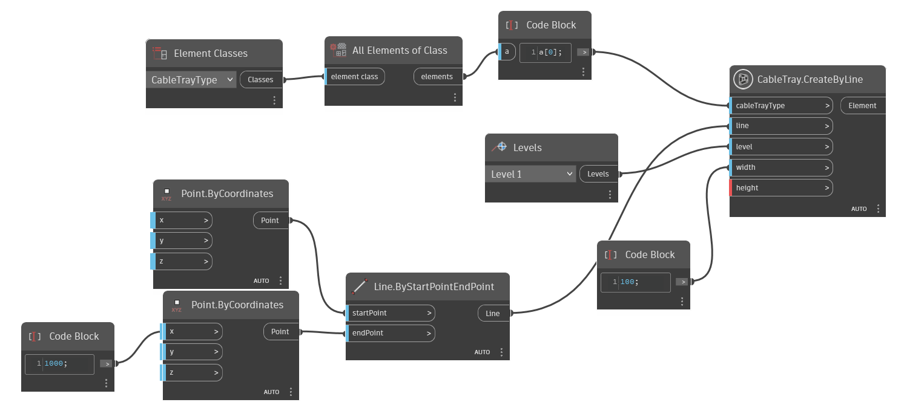
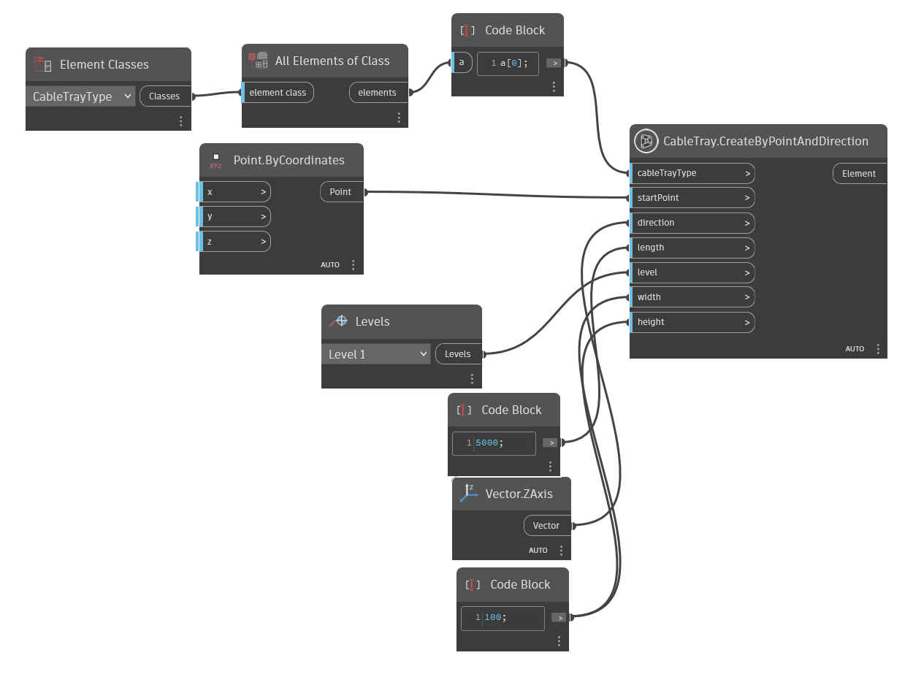
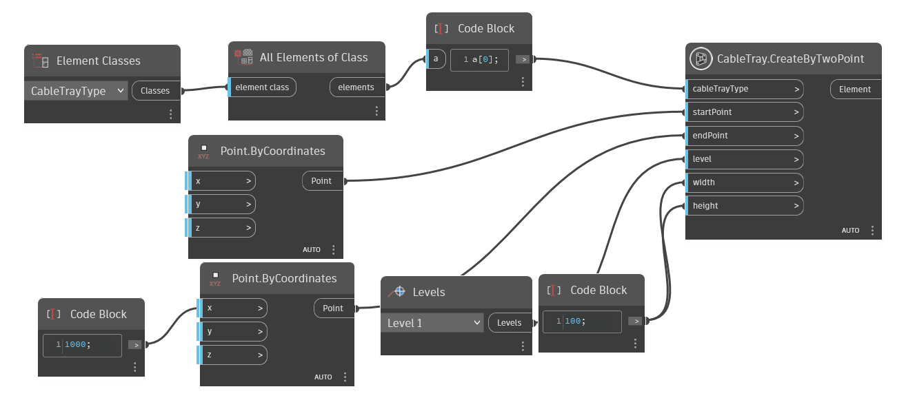

Class CableTray
- Namespace
- OpenMEP.Element
- Assembly
- OpenMEP.dll
This class represents a cable tray in Autodesk Revit.
public class CableTray- Inheritance
-
CableTray
- Inherited Members
Methods
CreateByLine(Element, Line, Level, double, double)
create new cable tray by line
[NodeCategory("Create")]
public static Element? CreateByLine(Element cableTrayType, Line line, Level level, double width, double height)Parameters
cableTrayTypeElementThe cable tray type. This must be a cable tray type accepted by isValidCableTrayType(). If the input cable tray type is InvalidElementId, the default cable tray type from the document will be used.
lineLineline defined draw pipe
levelLevellevel place cable tray
widthdoublewith value of cable tray
heightdoubleheight value of cable tray
Returns
- Element
Examples

CreateByPointAndDirection(Element, Point, Vector, double, Level, double, double)
Creates a new instance of cable tray Point and Direction
[NodeCategory("Create")]
public static Element? CreateByPointAndDirection(Element cableTrayType, Point startPoint, Vector direction, double length, Level level, double width, double height)Parameters
cableTrayTypeElementThe cable tray type. This must be a cable tray type accepted by isValidCableTrayType(). If the input cable tray type is InvalidElementId, the default cable tray type from the document will be used.
startPointPointThe start point of the cable tray location line
directionVectordirection of cable tray
lengthdoublelength of cable tray
levelLevelThe element id of the level which this cable tray based. If the input level id is invalidElementId = -1, the nearest level will be used.
widthdoublewith of cable tray
heightdoubleheight of cable tray
Returns
- Element
Examples

CreateByTwoPoint(Element, Point, Point, Level, double, double)
Creates a new instance of cable tray by start point and end point
[NodeCategory("Create")]
public static Element? CreateByTwoPoint(Element cableTrayType, Point startPoint, Point endPoint, Level level, double width, double height)Parameters
cableTrayTypeElementThe cable tray type. This must be a cable tray type accepted by isValidCableTrayType(). If the input cable tray type is InvalidElementId, the default cable tray type from the document will be used.
startPointPointThe start point of the cable tray location line
endPointPointThe end point of the cable tray location line
levelLevelThe element id of the level which this cable tray based. If the input level id is invalidElementId = -1, the nearest level will be used.
widthdoublewith of cable tray
heightdoubleheight of cable tray
Returns
- Element
Examples
